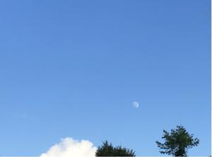
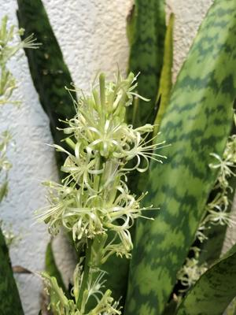

うるがいの話 ある日
最新: 令和４年のウンケー【うるがいの話 ある日】とは 一日だけのプログです
『うるがいの話』の最新一日だけのプログで、通信料が少なく経済的だ。カニの画像をクリックすると全ての日付が載る『うるがいの話』サイトを表示します
|
|
【うるがいの話】 うるがい(ｳﾙｶﾞｲ urugai)とは、『もずくがに』の名前でとても大きくなります。 |
|---|---|
|
|
【カミマヤーの話】 猫のことを方言でマヤーといいます。カミマヤー（kamimayaa）とは、神の猫のことです。 |
|
【たながぁの音楽】 たながぁ（ﾀﾅｶﾞｰ tanagaa）とは手長えびのことで、何種類かあり大きいのは車 エビぐらいになります。 |

|
【ぶながぁの話】 ぶながぁ(ﾌﾞﾅｶﾞｰ bunagaa)とは、赤い髪の毛、赤い身体、そして身長は１ｍ２０ｃｍ ぐらい、川の蟹を食べているの目撃された。場所は沖縄県国頭郡大宜味村のと ある村僕の隣近所に住んでいる爺さんから、聞いた話です。 |
|
|
【ギーマの話】 ギーマ(giima)とは、山原の里山に咲くスズランに似た、 花を付けます。実は食べられます、 気が付くと口の周りが紫になっています。 |
2022年08月10日 (水）令和４年のウンケー
16:52
 
昨日 ＳＭＳより
お疲れ様です、連絡遅くなりすみません、明日２時に伺います、時間のご都合
如何でしょうか、宜しくお願いします
16:52
了解、何名で来る予定
20:514
あやこ、きえこと二人の子供四人の７人で伺います、宜しくお願いします。
16:52
了解、ただ今身内にコロナ感染出ているので、短い時間でお願いしよう
16:52
大丈夫です、線香あげて挨拶したら直ぐに失礼しますので宜しくお願いします
16:52
了解
16:52
妹の家族が、旧盆に来たいと連絡があった。コロナなので・・、といったが
それでもと言われる。ヨメに言うと非常識と言われ、大変なことになったが
まー、なにか特別な要件もあるんだろう。昼過ぎ、妹の旦那、子供二人と子
供１一人、赤ちゃん２名の６名が来た。仏壇に手を合わせた後、立ったまま
で数分近況を確認し、帰っていった。特別な要件は無かったが、彼らにとっ
ては３年も延期したくなかったのだろう。
１６時４２分 ビットコインの総資産 ￥８、９９０↓